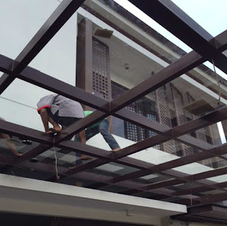

Kian berkembangnya dunia pembangunan, karenanya hadir banyak material penambah yang melengkapi keindahan sebuah banguanan. Namun, tak cuma estetika namun juga keamanan bagi penghuni di dalamnya. Tidak halnya hadir berjenis-jenis material kaca dan juga lantai yang kian melengkapi nilai keindahan sebuah bangunan.
Sekarang telah hadir beragam maca macam kaca yang dapat dijumpai, tiap-tiap kaca mempunyai fungsinya masing-masing. Bisa untuk system keamanan, estetika dan masih banyak yang dapat di dapatkan dari pemasangan kaca. Tipe kaca-kaca tersebut diantaranya merupakan kaca tempered, kanopi kaca, kaca frameless, kaca cermin, railing kaca dan masih banyak jenis kaca lainnya yang bisa anda dapatakan dan anda aplikasikan pada bangunan. Setiap kaca memiliki fungsi masing-masing yang membuat banyak orang kian mebutuhkannya dari hari ke hari. Berikut ini sedikit penjelasan mengenai bermacam ragam kaca dan fungsi kaca dan juga parket lantai kayu jati yang bisa anda peroleh.
Distributor & Supplier Pintu Lipat Kaca Balikpapan

Pastinya anda sudah mengenal banyak kelebihan dari kaca tempered.Pintu lipat kaca digunakan saat ruangan digunakan untuk hal yang privacy. Anda dapat mencari teladan pintu lipat kaca tempered minimalis lainnya. Kini pasti, modelnya banyak pantas dengan yang Anda butuhkan.
Harga pintu kaca lipat Balikpapan frameless ini betul-betul dipengaruhi oleh ukuran lebar dan tingginya pintu. Akan melainkan, ada juga penentu harga lainnya seperti aksesoris. Tetapi, pastikan Anda mengorder pintu kaca lipat Balikpapan yang dilengkapi dengan aksesoris yang berkualitas, dan yang terutama aksesoris berupa hinges.
Distributor & Supplier Kaca Shower
Anda pastinya meninginkan desain kamar mandi rumah layaknya kamar mandi hotel berbintang yang menerapkan kamar mandi duduk serta dilengkapi shower maupun bath tub. Dan sensasi mandi menjadi lebih asik untuk dinikmati. Tidak hanya indah tapi kaca shower bisa menjadi kaca pembatas antara lantai kering dan basah pada kamar mandi. Penyekat ini akan memisahkan antara daerah basah yang digunakan untuk mandi atau meletakan shower dan tempat lain yang yakni area kering.
Tak anda membutuhkan kaca shower anda dapat mengunjungi langsung dis.or.id. Tidak hanya itu, kaca shower yang di beli di dis.or.id pemasangan lebih gampang dan fleksibel. Tidak terbaik dan harga relatif murah. Anda dapat buktikan sendiri.
Distributor, Supplier & Jasa Pasang Kanopi Kaca

Salah satu ragam kanopi kaca yang dapat anda aplikasikan pada atap merupakan atap kaca skylight yang adalah kanopi kaca dalam bentuk jendela horizontal atau kubah yang lazimnya ditempatkan di atap bangunan yang memiliki maksud untuk pencahayaan ruangan. Anda dapat memilih kanopi kaca yang cocok dengan keperluan dan harapan anda. Canopy kaca dengan atap kaca memang sebuah bangunan yang asangat elgan untuk jaman modern seperti sekarang ini dengan harga yang amat lumayan kalau di bandingkan kanopi atap biasa. Jadi telah tidak heran lagi semua orang mau mencari harga yang sungguh-sungguh kompetitif untuk menyesuaikan budget atau anggaran mereka masing – masing untuk membikin produk canopy kaca. Jikalau tembus pandang, kaca menyerap cahaya yang masuk sehingga semakin tebal kaca karenanya kian sedikit sinar yang dapat melewatinya, maka sifat transparannya makin berkurang.|Di samping pintu kaca shower akan membuat kamar mandi kecil terlihat lebih besar.
Disana anda bisa menerima atap kanopi kaca dengan kualitas terbaik dan harga relatif murah. Jika itu, kanopi juga bisa melindungi kendaraan beroda empat dan kendaraan lain anda. Banyak bangunan seperti gedung perkantoran, perumahan, ruko dan apartement yang menerapkan kanopi kaca tempered. Disana anda akan memperoleh kanopi kaca yang sesuai dengan bermacam ketebalan dan harga yang cukup relatif murah.
Jasa Maintenance Kaca
Jasa maintenance kaca yaitu perusahaan yang akan membantu supaya gedung perkantoran Anda terlihat seperti baru. Kaca benar-benar memerlukan perawatan karena tiap-tiap hari terkena sinar sang surya atau juga hujan. Perlengkapan ragam kotoran seperti debu serta cahaya sang surya dan juga hujan kerap membuat kaca gedung menjadi kusan dan tak menarik. Membersihkan bagian kaca gedung Anda yang mungkin rusak, pecah, atau mengalami dilema lainnya.
Bila juga dengan warna dan wujud kaca.
Dis.or.id memahami kian banyak gedung pencakar langit dengan betuk yang berbeda-beda. Disana anda dapat memanfaatkan jasa maintenance kaca dengan energi ahli yang sanggup membersihkan gedung kaca dengan produk pembersih kaca apa yang terbaik untuk menghilangkan kotoran dan kusam. Oleh sebab itu, dis.or.id cuma memilih orang-orang yang sungguh-sungguh profesional dan telah mempunyai pengalaman dalam hal maintenance kaca. Dengan telah memberikan training terhadap kekuatan pakar sehingga mereka telah dapat melakukan profesi mereka dengan sungguh-sungguh bagus.
Jasa Pemasangan Kaca Tempered

Kini jasa pemasangan kaca tempered menjadi alternatif yang ideal ketika Anda berkeinginan mempunyai sebuah hunian atau gedung perkantoran yang komponen tertentu terbuat dari kaca tempered. Kecuali ini disebabkan bahan ini bukan variasi kaca lazim. Kini alat khusus untuk memotong tipe kaca yang satu ini. Kaca variasi Tempered mempunyai kekuatan 4-5 kali lebih baik diperbandingkan kaca biasa dengan ketebalan yang sama. Selain sembarang tukang juga bisa menjalankan proses pemotongan ini. Kini, semakin banyak properti yang menggunakan kaca tempered. Kecuali ini tidak lain sebab kian banyak orang yang memahami kwalitas serta keunggulan dari kaca tempered ini.
Seandainya itu, bermacam komponen properti akan semakin menarik seandainya dihasilkan dari kaca tempered seperti kanopi, pintu, kamar mandi, dan balkon.
Dengan mangunjungi dis.or.id, anda dapat menerima dan memanfaatkan jasa kaca tempered yang pantas dengan keinginan anda. Bukan sembarang alat yang diterapkan untuk memotong kaca tempered sesuai dengan kebutuhan. Tidak saat ini anda sedang berkeinginan membangun suatu bangunan atau gedung, anda dapat memanfaatkan kaca tempered untuk dipakai segera ke semua tipe bidang. Lebih dari itu, dis.or.id telah menyiapkan energi ahli yang siap untuk melakukan pemasangan, entah itu kaca tempered untuk kanopi, pintu, partisi, balkon, dan lain sebagainya. Harga yang ditawarkan untuk pemasangan kaca tempered sangat murah.
Distributor & Supplier Pintu Kaca

Pintu kaca ialah hal yang cukup penting dimiliki oleh sebuah bangunan. Semakin banyak teladan pintu kaca saat ini seperti kaca tanpa bingkai atau frameless yang banyak diterapkan untuk pintu perkantoran dan pusat perbelanjaan. Dengan berjenis-jenis varian bingkai seperti pigura kayu atau aluminium dan tanpa bingkai atau frameless yang yaitu desain pintu kaca tanpa pigura. Desain hal yang demikian dapat disesuaikan dengan konsep properti Anda. Anda tinggal tentukan saja teladan pintu kaca seperti apa yang berharap Anda miliki.
Dis.or id siap membantu anda untuk membuatkan pintu kaca idaman anda. Amati Ukuran serta ketebalan menyesuikan dengan kemauan Anda.
Dis.or.id memiliki energi yang telah benar-benar profesional di bidang ini. Untuk budget yang lebih sedikit, Anda dapat memilih macam kaca non-tempered.
Jual Kaca Cermin
Kaca cermin dapat dijadikan aksesoris untuk mempercantik interior rumah Anda. Lihat saja banyak produk cermin yang dihasilkan dengan desain unik dan menarik. Banyak produsen kaca cermin yang membikin dengan desain yang berbeda. Jadi, cuma kelihatan transparan dari satu sisi saja. Tidak saja, memang kesan minimalis menonjol dari cermin dengan bentuk persegi atau persegi panjang. Sekarang perlu dilihat juga yaitu apakah Anda ingin mempunyai kaca cermin desain minimalis atau yang elegan. Cermin minimalis mempunyai siku.
Dis.or.id ialah penyedia beraneka ukuran kaca cermin yang bisa anda aplikasikan ke gedung, kantor ataupun rumah anda. Artinya, cermin hal yang demikian tak memiliki bingkai atau frame. Ada yang terbuat dari plastik, kayu, dan aluminum. Dengan macam kaca ini, orang yang berada di luar ruangan tak dapat memperhatikan apa yang ada di dalam ruangan. Jadi, orang di luar tidak dapat memperhatikan Anda berada di dalam. Tak anda berminat untuk memiliki kaca cermin baik sebagai pemanis ruangan atau sebagai pintu, anda bisa lantas mengunjungi dis.or.id. Disana anda dapat menerima kaca cermin yang layak dengan keinginan anda.
Jasa Pemasangan Railing Kaca

Tidak konsep rumah modern dikala ini, kebanyakan rumah dibangun dengan desain minimalis. Pastikan komponen hal yang demikian terbuat dari bahan aluminum yang kuat. Tapi, kecuali desain, Anda juga perlu mengamati bahan yang diterapkan. Sebaiknya pakai kaca tempered sebab variasi kaca ini amat kuat. Tidak kaca ini pecah, pecahannya halus sehingga tidak akan melukai orang.
Anda bisa memilih kaca dengan mutu terbaik. Tidak ini tak hanya diatur oleh ketebalan atau harga tetapi juga oleh variasi. Ini ialah jenis kaca yang sangat baik dan kuat. Kaca ini sungguh-sungguh kuat dan juga aman. Dikatakan sungguh-sungguh aman lantaran kaca tempered tak menimbulkan pecahan yang runcing dikala tiba-tiba kaca pecah entah itu pengaruh kecelakaan atau bencana seperti gempa. Aluminum umumnya yang digunakan sebagai railing atau pigura. Jika memberikan kesan minimalis pada interior rumah, ini juga membikin rumah Anda terlihat lebih nyaman untuk diwujudkan daerah tinggal.
Dengan harga yang betul-betul relatif murah, anda dapat segera menerima railing kaca yanag anda inginkan.
Jasa Pemasangan Kubikel Toilet
Seandainya anda mengininkan kamar mandi yang layaknya mall ataupun hotel, ada bagusnya anda memakai kubikel kamar mandi. Banyak keuntungan yang bisa didapat dengan menggunakan kubikel WC seperti bisa membikin toilet nampak lebih bersih dan juga cuma membutuhkan sedikit space.
Anda juga bisa membikin WC di space yang lebih kecil dan tak membutuhkan lahan yang semacam itu besar untuk membikin kamar kecil yang banyak. Kaca juga bisa menjadi solusi estetika kamar mandi, melainkan juga bisa jadi keadaan sulit jikalau Anda memakai material dan daerah yang salah. Kaca sebagai penyekat dalam kamar mandi awam disebut kaca shower. Kaca shower banyak digunakna sebab memberikan kesan mewah.
Keuntungan dari sekat kaca memberikan merupakan bisa memberikan efek luas karena ruangan tersekat melainkan secara visual tak.
Kaca shower yang di jual di jamin kaca shower yang memiliki mutu terbaik dan bermutu tinggi.
Distributor & Supplier Partisi Kaca
Partisi kaca digunakan dimana saja. Tidak hanya sebagai pembatas di mall, hotel, atau kantor-kantor saja, melainkan juga dipakai sebagai sekat ruangan di rumah hunian. Kini, partisi kaca ini juga untuk rumah hunian. itu, cara kerjanya juga memakan waktu sehingga Anda menghembat biaya pemasangan. Anda dapat menghitung sendiri berapa uang yang patut Anda siapkan untuk membeli bahan untuk partisi tembok. , untuk space yang tidak begitu luas, Anda menyekat menjadi ruangan dengan partisi ini tanpa merasa ruangan menjadi sempit. Anda dapat mencontoh mereka. , Anda wajib tahu ada desain yang berbeda. Ada partisi kaca frameless atau tanpa pigura dan partisi dengan pigura. Anda patut tahu ada kaca transparan, semi transparan dan kaca yang sama sekali tak transparan yang kerap kali disebut dengan kaca cermin. Kecuali itu, teladan partisi kaca ada yang frameless (tanpa pigura) dan juga ada yang mengaplikasikan frame.